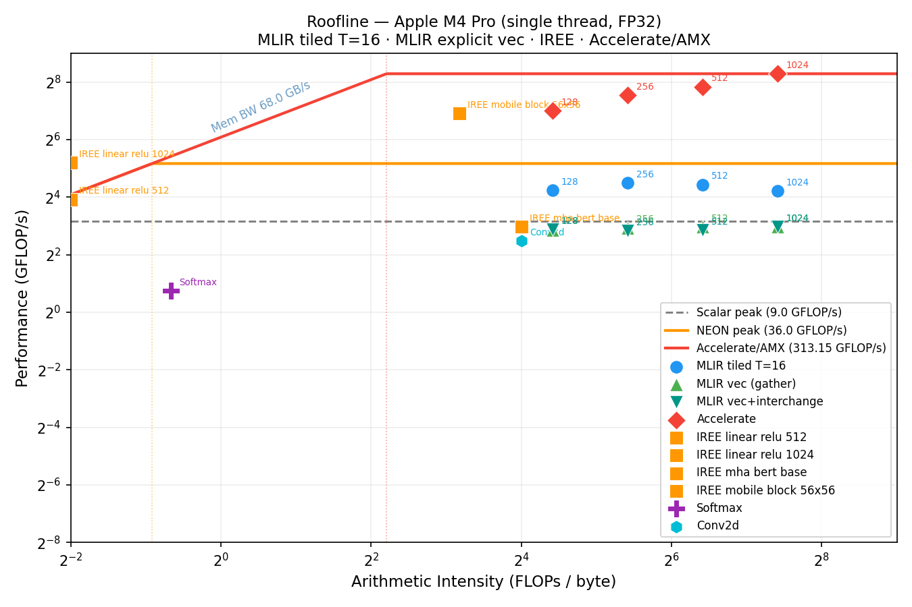

MLIR Empirical Study on AArch64 (Apple M4 Pro)
I ran an empirical study of MLIR optimization passes on an Apple M4 Pro (AArch64, single thread, FP32) to understand how far standard MLIR tooling can take you — and where the ceiling is relative to production compilers and hardware-specific libraries.
The study is organized around five research questions, all focused on matrix-multiplication and related kernels. The full source, scripts, and results are available at github.com/federicobruzzone/mlir-study.
Roofline
The roofline plot below situates all measured kernels against the hardware performance ceilings of the M4 Pro. The three ceiling lines correspond to scalar FP32 peak (\(9\,\text{GFLOP/s}\)), NEON FP32 peak (\(36\,\text{GFLOP/s}\)), and Accelerate/AMX (\(313\,\text{GFLOP/s}\) measured at \(N=1024\)). Generated by plot_roofline.py from roofline.csv.
How to read this plot. The x-axis is arithmetic intensity — FLOPs performed per byte transferred from memory (log scale). The y-axis is measured throughput in GFLOP/s (log scale). The diagonal line rising from the left is the memory-bandwidth ceiling: a kernel that moves \(B\) bytes at \(68\,\text{GB/s}\) can sustain at most \(68B\) FLOPs/s regardless of how fast the FPUs are. The horizontal lines are the compute ceilings: scalar, NEON, and AMX. A kernel's ridge point — where the diagonal meets a horizontal ceiling — is the minimum arithmetic intensity needed to be compute-bound at that ceiling. Points to the left of the ridge are memory-bound; points to the right are compute-bound. The gap between a point and the ceiling above it is the efficiency headroom still available.

math.exp with no SIMD.
MLIR tiled T=16 (blue circles) sits between the scalar and NEON ceilings, reaching \(18\text{–}25\,\text{GFLOP/s}\) — the auto-vectorizer fires, but not to NEON peak. MLIR vec (gather) and MLIR vec+interchange both land below the scalar ceiling: the gather variant suffers from stride-\(N\) loads on \(B\); interchange fixes the loop order but still emits masked scalar loads — the two are indistinguishable in wall-clock time. Accelerate (red diamonds) exceeds the AMX ceiling at large \(N\), consistent with \(313\,\text{GFLOP/s}\) measured at \(N=1024\). The IREE mobile block reaches \(109.1\,\text{GFLOP/s}\) — between NEON and AMX — thanks to its fused depthwise+pointwise lowering.
How the ceiling values are derived.
Scalar \(9\,\text{GFLOP/s}\) — theoretical only: \(1\,\text{FMA/cycle} \times 2\,\text{FLOPs/FMA} \times 4.5\,\text{GHz} = 9\,\text{GFLOP/s}\). No measurement involved, pure architecture.
NEON \(36\,\text{GFLOP/s}\) — theoretical only: \(4\,\text{lanes f32}\,(128\text{-bit}) \times 2\,\text{FLOPs/lane (FMA)} \times 4.5\,\text{GHz} = 36\,\text{GFLOP/s}\). Assumes 1 NEON FMA pipe; no measurement.
AMX/Accelerate \(313\,\text{GFLOP/s}\) — measured:cblas_sgemmat \(N=1024\) with the NITER loop, read from rq5_vs_baseline.csv. This is a proxy for the AMX ceiling, not the theoretical peak of the coprocessor — Accelerate does not necessarily saturate AMX at \(100\%\), so the true AMX peak may be higher.
Setup
Every experiment lowers a kernel written in the Linalg dialect down to native code through one of five lowering pipelines:
- Affine —
convert-linalg-to-affine-loops→lower-affine→ LLVM (to_affine.sh) - SCF —
convert-linalg-to-loops→ LLVM (to_scf.sh) - Tiled — Affine +
affine-loop-tile=tile-sizes=T,T,T(to_affine_tiled.sh) - Fused — Tiled +
affine-loop-fusion(to_affine_fused.sh) - Vectorized — Tiled +
affine-super-vectorize(explicit NEON) (to_vector.sh) - Vec+Interchange — Tiled +
--enable-loopinterchange+affine-super-vectorize(to_vector_interchange.sh)
All MLIR kernels are compiled to native AoT binaries via
_compile_native.sh
(mlir-translate --mlir-to-llvmir then Homebrew LLVM 22 clang -O3 -march=native).
mlir-runner (JIT) was abandoned for timing. Baselines use Apple Accelerate via cblas. Wall-time is measured with
hyperfine. The hardware target is an Apple
M4 Pro: \(12\) cores, \(64\,\text{KB}\) L1-D, \(4\,\text{MB}\) L2, \(24\,\text{GB}\) RAM, \(68\,\text{GB/s}\) memory bandwidth.
Eliminating process overhead
A critical methodological issue: hyperfine measures the wall-time of the entire
process — macOS startup, dynamic linking (\({\sim}50\,\text{ms}\) fixed cost), input allocation and fill,
then the kernel. For a matmul at \(N=128\), the actual kernel takes \({\sim}1\,\text{ms}\) while the total
process time is \({\sim}57\,\text{ms}\): \(98\%\) overhead, \(2\%\) compute.
The fix: an scf.for loop with NITER iterations wraps the kernel call
inside every @main() (see
bench.mlir.tpl).
The output fill is inside the loop (necessary because
linalg.matmul accumulates into C, so C must be reset each iteration). Scripts
divide hyperfine wall-time by NITER to recover per-call latency. NITER is
chosen so startup is <10% of total:
| N | NITER | Approx. total time | Overhead fraction |
|---|---|---|---|
| 128 | 100 | ~200 ms | < 25% |
| 256 | 20 | ~200 ms | < 20% |
| 512 | 5 | ~250 ms | < 15% |
| 1024 | 2 | ~1.5 s | < 5% |
The same Homebrew LLVM 22 toolchain is used for both mlir-translate and
clang, avoiding IR-attribute mismatches that occur when Xcode's bundled clang
encounters LLVM 22 intrinsic attributes.
Research Questions and Key Findings
RQ1 — Tile size vs. performance across problem sizes
Sweeping tile sizes \(T \in \{16, 32, 64, 128, 256\}\) across \(N \in \{128, 256, 512, 1024\}\)
(rq1_sweep_tiles.sh, llvm_mca_analysis.sh, rq1_tiling.csv, llvm_mca.csv),
the optimal tile is \(T=32\), which at \(N=1024\) reaches \(24.4\,\text{GFLOP/s}\) and beats \(T=16\) (\(20.4\,\text{GFLOP/s}\))
at all large problem sizes. \(T=16\) and \(T=32\) are \(4\text{–}6\times\) faster than \(T=64\) (\(N=1024\): \(0.088\,\text{s}\) vs \(0.653\,\text{s}\)).
Static analysis with llvm-mca reveals identical IPC for \(T=16\) and \(T=64\) (both \(1.81\)) —
the code quality is the same. The speedup is entirely a cache effect: at \(T=64\) with
--mattr=apple-m4 -O3, the stride between tiles is an exact power-of-2 multiple of the
\(64\,\text{KB}\) L1 size, causing systematic cache-set aliasing and catastrophic eviction.
Runtime performance and static IPC are decoupled near cache-size boundaries.
llvm-mca cannot predict this; only measurement reveals it.
RQ2 — Affine vs. SCF vs. tiled lowering paths
The Affine and SCF paths produce less than \(3\%\) difference at all problem sizes — they are effectively equivalent once LLVM optimizes them. Tiling (\(T=16\)) gives a \(4\text{–}8\times\) speedup over untiled paths at \(N \geq 256\) (\(N=1024\): from \(863\,\text{ms}\) down to \(106\,\text{ms}\)) (rq2_compare_paths.sh, rq2_paths.csv).
RQ3 — Impact of affine-loop-fusion on a matmul+relu+bias chain
No measurable effect (\(\Delta < 1\sigma\)). The matmul \(O(N^3)\) completely dominates: the elementwise relu and bias add account for less than \(0.2\%\) of total time, leaving nothing for fusion to exploit (rq3_fusion.sh, rq3_fusion.csv, kernel: elementwise/chain.mlir).
RQ4 — Tiling behavior across kernels
Tiling helps compute-bound kernels (conv2d, batch_matmul) in the same way it helps matmul.
Softmax is the exception: tiling is irrelevant not because it is memory-bound, but
because its bottleneck is scalar math.exp with no SIMD — tiling the loop does
not help scalar transcendental throughput
(rq4_workloads.sh, rq4_workloads.csv).
Conv2d (56×56, 64 channels, 3×3 kernel — conv2d.mlir)
Conv2d is compute-bound in theory, but the standard lowering of
linalg.conv_2d_nhwc_hwcf emits naive nested loops with no im2col transform and no
spatial tiling, producing poor data reuse across the kernel window. The result sits far below
even the scalar FP32 ceiling: roughly \({\sim}3\,\text{GFLOP/s}\) against a \(9\,\text{GFLOP/s}\) scalar peak. The fix
requires rewriting conv as im2col followed by a matmul — something IREE does automatically but
the standard pass set does not provide.
Softmax (512×512, row-wise — softmax.mlir)
Softmax has an arithmetic intensity of \(\approx 0.63\) FLOPs/byte, which is
above the NEON ridge point (\(36 / 68 \approx 0.53\) FLOPs/byte) — so it is
theoretically compute-bound, not memory-bound. Yet the measured throughput is only
\(1.66\,\text{GFLOP/s}\) (\(4.6\%\) of the roofline bound). The real bottleneck is
math.exp: the standard MLIR lowering emits it as a scalar library call
with no SIMD vectorization, and the sequential scf.for reduction loops
introduce carried dependencies that prevent instruction-level parallelism.
Tiling the outer loops is irrelevant — it cannot help scalar transcendental throughput.
The fix requires either a vectorized exp approximation or a fused
online-softmax kernel (as in Flash Attention),
neither of which the standard dialect set provides.
RQ5 — MLIR standard passes vs. Apple Accelerate (AMX)
At \(N=1024\) there is a \({\sim}17\times\) performance gap between the best MLIR tiled kernel (\({\sim}18.6\,\text{GFLOP/s}\)
at \(T=16\)) and Apple Accelerate (\(313\,\text{GFLOP/s}\)).
Explicit MLIR vectorization via affine-super-vectorize (MLIR vec, gather) is
\({\sim}2.4\times\) slower than the auto-vectorized tiled path (\(7.8\) vs \(18.6\,\text{GFLOP/s}\)):
the vectorizer puts \(k\) innermost, causing a stride-\(N\) gather on \(B\) instead of unit-stride loads.
Adding --enable-loopinterchange (vec+interchange) reorders the loop so \(j\) is
innermost (unit-stride for \(B\) and \(C\)), but the improvement is negligible (\(7.88\,\text{GFLOP/s}\)): the
vectorizer still emits vector.transfer_read without in_bounds, forcing masked
scalar loads even on contiguous accesses. This may be related to an
open upstream MLIR bug
where affine-super-vectorize fails to set in_bounds on statically divisible shapes —
I am currently investigating whether this is the root cause.
AMX is inaccessible from any MLIR standard pass
(rq5_vs_baseline.sh, rq5_vs_baseline.csv).
Why affine-super-vectorize destroys the information LLVM needs
Without affine-super-vectorize, LLVM receives the scalar loop intact.
It can run SCEV and TTI to analyse the stride pattern, compute the gather cost,
and decide to leave the loop scalar:
; loop over k — LLVM sees the stride:
%ptr_B = getelementptr float, ptr %B, i64 %stride_2048 ; stride N×4
%val = load float, ptr %ptr_B ; scalar load
%acc = fmul float %val_A, %val
With affine-super-vectorize, the loop over k has already been
replaced by a sequence of scalar extractions and insertelement instructions.
LLVM sees a pre-built gather — there is nothing left to analyse:
; the k-loop is gone — replaced by insertelement
%v0 = load float, ptr %ptr_B_k0 ; B[k, j]
%v1 = insertelement <4 x float> %v0, ...
%v2 = load float, ptr %ptr_B_k1 ; B[k+1, j]
%v3 = insertelement <4 x float> %v2, ...
; ...
%result = fmul <4 x float> %vec_A, %vec_BLLVM is not able to re-analyse decisions already made by MLIR at a higher level. It is like handing someone a puzzle already assembled the wrong way and asking them to optimise it — they cannot take it apart and start over.
IREE Kernels as Real-Architecture Building Blocks
The IREE benchmarks are not synthetic microbenchmarks — they are actual PyTorch layers exported
to MLIR via iree-turbine
(export_models.py),
compiled with iree-compile, and timed with
iree-benchmark-module
(rq_iree.sh,
rq_iree.csv).
Unlike iree-run-module, iree-benchmark-module runs entirely
in-process: \(20\) warmup iterations followed by \(200\) timed repetitions, reporting
per-call mean and standard deviation with no process-startup overhead — the same
principle as the NITER loop used for the MLIR kernels, but built into the tool.
The benchmark kernel is a MobileNetV2-style inverted residual block:
| Kernel | PyTorch layer | Real-world counterpart | GFLOP/s (IREE) |
|---|---|---|---|
linear_relu_512/1024 |
Linear(d,d) + ReLU |
FFN projection in a transformer block (BERT, GPT, LLaMA) | 14.3 / 33.2 |
mha_bert_base |
MultiheadAttention(d=768, heads=12, seq=128) |
Self-attention layer in BERT-base — Q/K/V projections, softmax, weighted sum | 7.66 |
mobile_block_56x56 |
Depthwise Conv2d(32, 3×3) + Pointwise Conv2d(32→16, 1×1) | MobileNetV2-style inverted residual block (depthwise-separable convolution) | 109.1 |
The mobile block reaches \(109.1\,\text{GFLOP/s}\) — well above the NEON ceiling (\(36\,\text{GFLOP/s}\)) and approaching the AMX ceiling (\(313\,\text{GFLOP/s}\)). This is not a measurement artifact: IREE's lowering stack fuses the depthwise and pointwise convolutions into a single tiled kernel, unlocking data reuse that neither pass can achieve independently. The depthwise convolution alone has very low arithmetic intensity, but after pointwise fusion the combined kernel becomes heavily compute-bound and IREE manages to use AMX or near-AMX throughput on the fused loop.
Three-tier Result (matmul \(1024^2\), single thread FP32)
| System | GFLOP/s | vs. MLIR naive |
|---|---|---|
| MLIR naive (affine, no tile) | ~2.4 | \(1\times\) |
| MLIR tiled T=16 | ~19 | \(8\times\) |
| IREE production MLIR | ~37 | \(15\times\) |
| Apple Accelerate (AMX) | ~313 | \({\sim}130\times\) |
Takeaways
Standard MLIR passes get you a long way with almost no effort — a single
affine-loop-tile pass recovers \(6\times\) on large matmuls purely from cache reuse.
Beyond that, the gap to production-quality stacks (IREE, Accelerate) is large and cannot be
closed from within the standard dialect set: AMX requires vendor-specific intrinsics, and
auto-vectorization quality depends heavily on how much freedom you leave the LLVM backend.
If you are targeting Apple Silicon and need more than \({\sim}20\,\text{GFLOP/s}\) per thread on dense linear algebra, the practical answer today is IREE or Accelerate — not hand-rolled MLIR pipelines.
I hope you found this study useful. Feel free to reach out if you have questions or want to discuss the methodology.